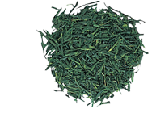
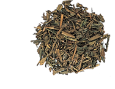

What is a green tea??
-Matcha-
Tencha that is stoneground immediately before shipping is called Matcha. Dark Matcha (Koicha) is used in Japan's traditional tea ceremony, and was previously made from the leaves of very old tea bushes - over 100 years old. In recent times, cultivar varieties suited to Koicha have been selected, while soil fertility management techniques and covered culture methods have been developed to provide the best tea for Koicha. Matcha is also used extensively in the making of traditional Japanese confections and various savory dishes. Another unique feature of Matcha is that unlike Sencha and other teas, when one drinks Matcha the leaf is fully consumed.
-Sencha-
Sencha is the most frequently drunk and well-known variety of green tea. It is made according to the most common processing methods, whereby the leaves are steamed and rolled to produce crude tea.
-Hojicha-
Hojicha is made by roasting Sencha or other types of green tea, which gives it a distinctive roasted aroma. The tea leaves are roasted in a roasting pan at a temperature of approximately 200 degrees C and then immediately cooled. Through roasting, caffeine is sublimated (changed directly from a solid to a gaseous state) and the Hojicha becomes less bitter. For this reason, it is said to be a tea that is easy to drink for children and elderly people. One may enjoy Hojicha's savory aroma and clear, light taste.
©http://www.itoen-global.com/allabout_greentea/varieties.html